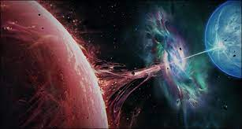
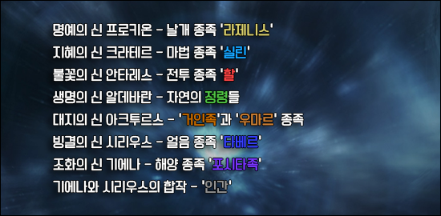
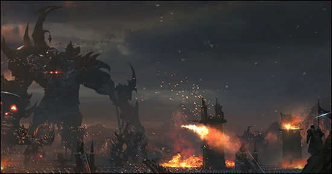
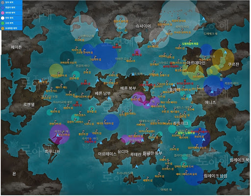

태초의 세상은 혼돈이었다. 하지만 규칙이 만들어지면서, 혼돈이었던 세상은 질서의 세계와 무질서의 세계로 갈라진다.
태초의 세상은 혼돈으로 가득 차 있었다.
그러한 세상에 질서가 생겨나면서 혼돈으로 가득 차 있던 세계는 붕괴를 일으켜 두 개로 갈라졌다.
질서의 신 루페온은 불완전함 속에 자리잡은 자신의 세계에 여러 가지 규칙들을 만들어내기 시작했다.
루페온은 대우주 오르페우스를 창조하고 공간을 메울 별을 만든 뒤, 절대 꺼지지 않을 태초의 빛 아크를 이용해 태양을 띄웠다.
그러나 무한한 태양과는 달리 별은 유한하여 생성되고 소멸되길 반복했다. 질서는 생명을 창조하였으나 죽음이란 그림자 또한 만들어 버린 것이다. 불완전한 질서의 세계를 관망하던 혼돈의 신 이그하람은 무한한 생명을 가진 아크에 흥미를 가지기 시작했다. 소멸하지 않는 아크야말로 혼돈의 결정체라 생각했던 이그하람의 시선은 아주 오랜 시간을 거쳐 서서히 탐욕으로 변하게 되었다.
2.일곱 신과 종족의 탄생
최초의 전쟁 그리고 가디언의 탄생
루페온이 만든 일곱 신 중 조화의 신 기에나가 생명의 원천인 바다를 창조한 이후, 하나의 대륙은 여러 개로 쪼개져 각기 다른 모습을 지니게 되었다.
초기에 루페온은 각 대륙에 자리잡은 아크라시아의 종족들을 위해 아크의 힘을 나누어 주었고, 종족들은 빠르게 발전해 나갔다.
그러나 아크의 힘으로 인해 아크라시아의 종족들은 교만해졌으며, 타락하여 신의 질서에 대항하기에 이른다. 이에 분노한 루페온은 종족들로부터 아크의 힘을 다시 빼앗아 일곱 개의 조각으로 분리해 신들에게 나누어 주었다.
그리고 일곱 신에게 새로운 종족들을 창조할 것을 명했다.
루페온의 명을 받은 일곱 신들은 아크라시아에 새로운 종족들을 창조했다.
명예의 신 프로키온은 루페온과 가장 닮아 있는 종족 라제니스를 탄생시켰고, 지혜의 신 크라테르는 마법을 자유자재로 다루는 종족 실린을 만들었다.
또한 생명의 신 알데바란은 다양한 형태로 분화 가능한 정령들을, 대지의 신 아크투르스는 문명을 창조해 나갈 수 있는 능력을 지닌 우마르 종족과 거인족을 탄생시켰다.
불의 신 안타레스는 강력한 전투력과 지략을 지닌 할족을, 시리우스는 빙결의 종족 타베르를 만들었다.
조화의 신 기에나는 대지의 모든 생명들과 소통이 가능한 요즈족, 그리고 바다 속에서도 살아갈 수 있는 포시타족을 만들었고, 마지막으로 시리우스와 힘을 합쳐 스스로 성장해 나가는 힘을 가진 ‘인간’을 만들었다.

3.사슬전쟁

사슬 전쟁. 긴 사슬처럼... 오랜 기간, 꼬리에 꼬리를 물고 발생한 이 참혹한 전쟁을 사람들은 그렇게 불렀다.
차원의 균열이 열리자 어둠군단의 악마들이 가장 먼저 쏟아져 나왔다.
어둠군단장 카멘은 엄청난 속도로 어둠군단을 지휘하며 순식간에 아크라시아를 파괴해 나가기 시작했다.
아크라시아로 건너온 카제로스는 한참 동안 대우주 오르페우스에 떠 있는 태양을 바라보았다.
그가 갈망했던 거대한 태초의 힘이 그곳에 있었다.
아르테미스 대륙 동부에 도착한 카제로스는 악마 군단을 결집시키고 전 세계로 군단을 내보내기 시작했다.
각 대륙의 종족들은 악마들의 힘에 속수무책으로 당할 수 밖에 없었다.
4.개척의 500년
풍류의 정원, 애니츠
데런 학살과 페이튼
분열된 로헨델과 베른의 탄생
루테란, 영광의 시대와 몰락
5대륙을 중심으로 7종족간의 변화의 시기

4.잊혀진 아크, 다가온 재앙 그리고 의지를 계승하는 자
사슬전쟁 이후, 대륙의 국가들은 빠르게 발전하며 전쟁의 상처를 치유해가기 시작했다.
새로운 대주교 아래 세이크리아는 종교의 성지이자 대륙의 중심으로서의 권위를 회복해갔다.
아름다운 음악이 울려 퍼지는 플레체에서는 예술이 발전하였고, 여인국 파푸니카에서는 탐스러운 과실이 여물고 축제가 끊이지 않았다.
또한, 우마르족은 아크라시움을 바탕으로 무기와 방어구를 제작해 부를 축적했다. 이렇듯 번성하기 시작한 아크라시아의 종족들은 그 어느 때보다 풍요한 시대를 영위해 나가고 있었다.
오백 년간 이어진 긴 평화로 인해 아크라시아의 종족들에게서 악마들과의 전쟁은 잊혀져갔고 아크의 존재 역시 완전히 잊혀졌다.
아크라시아의 종족들이 잊은 것은 비단 전쟁뿐만이 아니었다.
사람들은 아크를 동화책에서나 나오는 이야기라고 생각했으며 그렇게 태초의 힘인 아크의 존재는 아크라시아의 종족들에게서 점차 지워져 갔다.
하지만 오랜 세월을 거치며 카제로스의 육체가 봉인되어 있는 쿠르잔의 화산이 다시 분화하기 시작했고, 육체를 봉인했던 루페온의 사슬들도 조금씩 느슨해지기 시작했다.
페트라니아에 자리한 영혼과 공명하기 시작한 그의 육체로 인해, 다시 아크라시아에 크고 작은 카오스게이트가 열리기 시작했다.